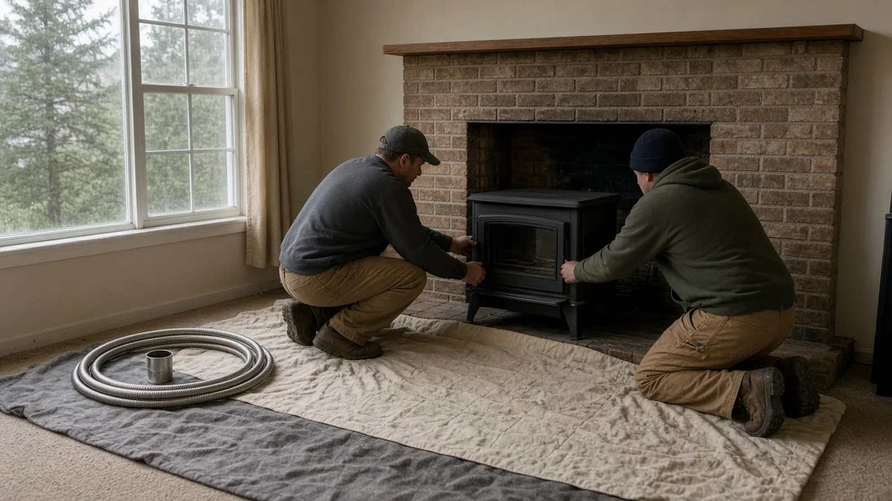
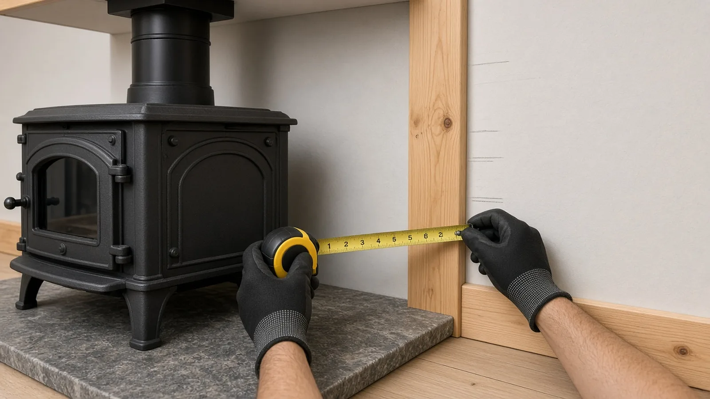
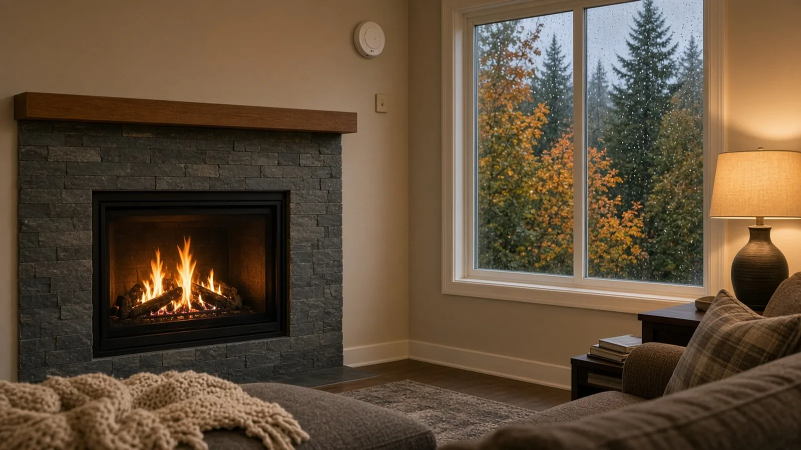

Wood Stove and Fireplace Insert Replacement Mountlake Terrace WA — Permits, Chimney Liners, Clearances and Burn Bans
By Board of Project Stewardship Editorial
Key Takeaways
- A stove or insert swap is permitted mechanical work in Mountlake Terrace. The City's Mechanical and Plumbing Checklist lists "Fireplace/Stove" and gas piping as permit items, and the City's construction permit FAQ names appliance vents for chimneys as a mechanical permit example. Apply through the City's permit portal before the old unit comes out.
- Certification decides when you can burn. During a Stage 1 air quality burn ban in Snohomish County, uncertified wood stoves, uncertified inserts and open wood-burning fireplaces must sit idle unless you have an approved exemption; during Stage 2, every wood and pellet device does. Washington's Department of Ecology also makes it illegal to sell or give away an uncertified stove.
- The chimney and clearances matter as much as the box. A new insert needs a liner and connection its manufacturer lists, a hearth and clearances that match its installation manual, and working carbon monoxide alarms. Verify every bidder on L&I Verify and get the liner, hearth and permit in the written scope.
Why Mountlake Terrace homeowners are replacing old stoves and fireplaces
Walk through almost any Mountlake Terrace neighborhood in late October and you can smell the first fires of the season. Many of the city's houses are mid-century ramblers and split-levels with a brick fireplace in the living room, and plenty of them have an older wood stove or insert that was added decades ago. Those units still throw heat, but many were never certified for cleaner burning, some sit on hearths and against walls that were never checked against a modern installation manual, and many vent into a masonry flue that was built for an open fire, not a sealed stove.
That combination is why stove and insert replacement is one of the most practical fall projects in south Snohomish County. A newer certified wood insert, a pellet insert or a gas insert can turn a drafty, smoky fireplace into a controlled heat source. It can also keep you burning legally on more winter days, because the air quality rules that apply here treat certified and uncertified devices very differently.
This guide walks through the decisions in the order a careful installer works through them: permit first, then the fuel choice, the chimney and liner, the hearth and clearances, carbon monoxide safety, burn bans, and finally how to vet the company doing the work. If the fireplace is part of a larger remodel, the Board's Mountlake Terrace home addition guide, its guide to hiring a remodeler in Mountlake Terrace and the Mountlake Terrace page cover other local work.
When a Mountlake Terrace stove or insert needs a permit
Start with the City, not the showroom. The City of Mountlake Terrace's Building Permits page lists the residential mechanical, plumbing, electrical and building applications, and its Mechanical and Plumbing Checklist includes "Fireplace/Stove" in its list of mechanical equipment, alongside vents and gas piping. The City's Construction Permit Frequently Asked Questions adds that changes to an existing mechanical, plumbing or electrical system need the matching permit, and it names heaters and appliance vents for chimneys among its mechanical permit examples.
In practice, a stove or insert replacement in Mountlake Terrace usually touches several of those lines at once:
- The appliance and its venting. Replacing a wood stove, setting a new insert or relining a chimney is mechanical work.
- Gas piping. A gas insert or gas stove needs a gas line, and the City's checklist lists gas piping as its own permit item.
- Electrical. Many inserts have blowers, and gas units often need power for controls. A new outlet in the firebox area means an electrical permit question.
- Building work. If the project opens walls, rebuilds a hearth or reframes a chase, ask whether a building permit is also needed. The FAQ notes that removing sheetrock or exposing studs in a wall requires a permit.
Applications and inspection requests go through the City's online permit portal, and the Building Permits page notes that inspections are scheduled through the portal and that issued permits must be on site. If you are unsure which applications apply, the City invites questions through its Ask a Permit Specialist form on the same page. The FAQ also warns that starting work without a permit violates City codes: the work must then be permitted and pass inspection or be returned to its original condition, and permit fees may be doubled as a penalty. The full Mountlake Terrace Municipal Code is online, and the Board's permits page explains how to read a permit record once it is issued.
Wood, pellet or gas: choosing what goes in the opening
Most Mountlake Terrace replacements fall into one of three families:
- Certified wood stoves and wood inserts. A modern certified wood insert slides into an existing masonry fireplace, while a freestanding stove sits on a hearth in the room. Both burn far more cleanly than an open fireplace or an older uncertified unit when they are fed dry wood, and certified wood devices can still be used during a Stage 1 burn ban as long as they do not produce visible smoke. They need firewood storage, regular ash removal and a chimney that is swept and inspected.
- Pellet stoves and inserts. Pellet units feed compressed pellets from a hopper with an electric auger and blower, so they need power and a vent the manufacturer lists. They are easy to run day to day, but they stop when the power goes out unless you plan a backup. Under the burn ban rules described below, pellet stoves are treated like other solid-fuel devices in a Stage 2 ban.
- Gas inserts and gas stoves. A sealed, direct-vent gas insert gives heat at the push of a button, works through burn bans, and needs no wood storage. It needs a gas line and a gas permit, a vent kit the manufacturer specifies, and in most cases power for the controls. If your house has no gas service yet, ask your gas utility about service first.
There is no single right answer. Owners who want heat that keeps running in a winter power outage often favor wood. Owners who mostly want ambience with a thermostat often favor gas. Whatever you choose, pick a specific make and model before the permit is filed, because the installation manual for that model sets the venting, the hearth and the clearances the inspector will check.
The chimney and the liner
The chimney is where most stove and insert projects get complicated. Many older masonry chimneys in Mountlake Terrace were built with clay flue tiles sized for an open fireplace. A modern insert has a much smaller flue outlet, and connecting it to a large, cold flue can mean poor draft, smoke spillage and faster creosote buildup.
That is why most insert installations run a continuous liner, usually flexible or rigid stainless steel, from the insert's flue collar to the top of the chimney, with a top plate or flashing and a cap. Some manufacturers call for an insulated liner. What matters is that the liner, connector and termination are the ones the insert's installation instructions list for that model, and that the size matches the insert's outlet.
Before any new appliance goes in, ask for:
- A chimney inspection and sweep. Have the existing flue cleaned and inspected for cracked tiles, missing mortar, a damaged crown and old creosote. The findings decide whether the chimney can be relined or needs masonry repair first.
- The liner specification in writing. Material, diameter, whether it is insulated, and the brand, so you can match it against the insert's manual.
- A plan for the damper and smoke chamber. Installers often remove or permanently open the old damper and seal the opening around the liner with a block-off plate so warm air does not escape up the old flue.
- The roof work. The liner termination, cap and any flashing touch the roof. If your roof is near the end of its life, the Board's Shoreline roof replacement guide covers flashing and the other details to settle in that scope, so coordinate the two jobs.
Freestanding stoves in a room without a masonry chimney use a listed chimney system instead: stovepipe from the stove to the ceiling, then a factory-built chimney through the attic and roof with its own support, firestop and roof flashing. Again, the brand and model must be the ones the stove's manual allows.
Hearth, clearances and the walls around the stove
Clearances are the distances between a hot appliance or its stovepipe and anything that can burn: wall studs, drywall paper, trim, a wood mantel, flooring, furniture. They are not guesses and they are not one universal number. Each certified stove and insert is tested and listed with its own required clearances and hearth protection, printed on the appliance label and in its installation manual. Some models allow reduced clearances only with a specific listed wall shield.

When you replace an old stove, do not assume the old hearth and wall setup is right for the new one. A careful installer will:
- Read the new model's installation manual before quoting, and bring it to the walk-through.
- Measure from the stove body and stovepipe to the side walls, rear wall, ceiling and any combustible trim, and compare each number with the manual.
- Check that the hearth pad or floor protection meets what the manual calls for in size and type, including the area in front of the loading door.
- Check the mantel and any wood trim above an insert against the insert's listed mantel clearances.
- Leave the manual with you, because the inspector may ask to see it and you will need it for maintenance.
If the measurements do not work, the fix might be a different model, moving the stove, adding a listed shield, or rebuilding the hearth. Those are the decisions that can turn a simple swap into a small remodel, so settle them before you sign. If the work opens walls, the City's FAQ points to a building permit as well.
Carbon monoxide alarms and safe operation
Any appliance that burns wood, pellets or gas can produce carbon monoxide if the venting fails, the chimney is blocked, or the appliance is installed or run badly. Washington law, in RCW 19.27.530, required the State Building Code Council to adopt rules for carbon monoxide alarms in residential occupancies. The statute exempts owner-occupied single-family homes legally occupied before July 26, 2009, but requires the seller to equip the home with carbon monoxide alarms that meet the state building code before a buyer moves in after a sale.
Exemption or not, a new fuel-burning appliance is the right moment to put working carbon monoxide alarms on every sleeping level, following the alarm maker's placement instructions. Ask the inspector whether your permitted work triggers alarm requirements, and test the alarms when the installer leaves. The City's Building Permits page also links smoke alarm information.
A few operating habits keep a new stove safe and clean:
- Burn only dry, untreated firewood. Ecology's wood stove page lists what is illegal to burn, including garbage, treated or painted wood, particle board, plastic and rubber.
- Watch the chimney. Ecology also notes that you cannot create chimney smoke above 20 percent opacity for more than six consecutive minutes. Thick smoke usually means wet wood or a starved fire.
- Keep it inspected. Have the chimney and liner inspected and swept on the schedule the manufacturer and your sweep recommend, and fix any damaged door gaskets or glass right away.
Burn bans and the wet season in Snohomish County
Fall and winter in Mountlake Terrace bring two things at once: the months you most want a fire, and the stagnant, foggy weather that traps wood smoke near the ground. Air quality burn bans for King, Kitsap, Pierce and Snohomish counties are issued by the Puget Sound Clean Air Agency, and its About Air Quality Burn Bans page explains the two stages:
- Stage 1. No burning in wood-burning fireplaces, uncertified wood stoves or uncertified fireplace inserts unless it is your only adequate source of heat and you have an approved exemption. All outdoor burning is prohibited.
- Stage 2. No burning in any wood-burning fireplace, wood stove or fireplace insert, certified or uncertified, or in pellet stoves, unless it is your only adequate source of heat and you have an approved exemption. All outdoor burning is prohibited.
The agency adds that even certified devices and households with an approved exemption cannot produce visible smoke during a ban. Bans usually last a few days but can last a week or more, and the agency posts the current burn ban status online. The state rule behind the stages is WAC 173-433-150, and Ecology's burn ban page explains how state and local bans fit together.
For homeowners, that has a direct effect on the replacement decision. An open fireplace or an uncertified stove is the first thing that has to go cold when air quality drops. A certified wood insert keeps working through a Stage 1 ban, and a gas insert works through both. If your fireplace is your backup heat for winter storms, plan your main heat so you are never relying on a device you cannot legally run. The Board's Bothell heat pump guide covers the other half of that plan, and the Lynnwood attic insulation and air sealing guide explains how to keep that heat in the house.
What to do with the old stove
Ecology's wood stove page is clear on three points worth knowing before demolition day:
- Selling, exchanging or giving away an uncertified wood stove is illegal in Washington under WAC 173-433-100. Do not list the old unit online or leave it on the curb for someone else to install.
- Recycling is the recommended route. Ecology encourages owners to recycle an uncertified stove.
- Stoves are certified when they are manufactured. A homeowner cannot apply to certify an old stove later, so look for the certification label or documentation on the unit itself.
Ecology also notes that removing an uncertified wood stove is not required when you buy or sell a house. If you are buying in Mountlake Terrace and the house has an older stove, ask for its label and documentation, and budget for an inspection before the first fire.
How the insert goes in
The video below follows an installer setting a wood insert into a brick fireplace with an existing clay flue: dropping a stainless liner down the chimney from the roof, flashing and capping the top, connecting the liner to the insert, and sealing around it before the insert and its surround slide into place. It is a useful picture of the sequence. It is not a substitute for the manufacturer's installation manual or a Mountlake Terrace permit and inspection for your house.
On a typical insert replacement, a careful crew will:
- Confirm the permit is issued and on site, and protect floors and furniture before anything is moved.
- Remove the old stove or insert, and have the chimney swept and inspected so the flue is ready to reline.
- Remove or block open the damper as the manual allows, and prepare the opening.
- Run the listed liner from the firebox to the top of the chimney, flash or plate the top, and install the cap.
- Connect the liner to the insert, set the insert, seal the block-off, and install the surround so it meets the listed clearances to the mantel and trim.
- Run gas and electrical connections under their permits where needed, test-fire the unit, walk you through operation, test the alarms and leave the manual.
- Schedule the City inspection through the permit portal before the job is called done.
Ask the crew to photograph the liner connection, the block-off and the top of the chimney before they are covered. Those photos are worth keeping with the permit record and the manual.

Materials Worth Knowing
- HearthStone makes wood and gas stoves, fireplaces and fireplace inserts built in Vermont.
- Blaze King makes wood and gas stoves and inserts, with an emphasis on efficient, lower-emission wood burning.
- Regency makes gas inserts, wood stoves and other hearth products in gas, wood, pellet and electric.
- Kidde makes smoke alarms and carbon monoxide alarms for homes.
Whatever you choose, ask each bidder to name the exact appliance make and model, the liner brand, diameter and insulation, the hearth protection, and the alarms. Ask for the installation manual for the appliance and the liner, and keep both with your permit record.
How to shortlist and verify a stove or insert installer
Washington L&I's hiring a contractor guidance recommends confirming that a contractor has an active registration, is bonded and insured, and has a clean history, getting at least three written bids, and putting the job in a written contract.
- Look up every firm, including any chimney, gas or electrical subcontractor, on L&I Verify.
- Ask who pulls the Mountlake Terrace mechanical permit and any gas, electrical or building permits, and confirm the permit numbers before work starts.
- Ask whether the chimney will be swept and inspected before the quote is final, and what happens if the flue needs repair.
- Ask for the appliance's installation manual and walk through the clearances, hearth and liner with the installer.
- Ask whether the appliance is certified and how it will be treated during Stage 1 and Stage 2 burn bans.
- Ask what happens to the old stove, and confirm it will be recycled rather than resold.
- Read the Board's hiring a contractor guide, bonds and insurance page and red flags list before you sign, and use the verify a contractor page for the checks.
Where Pacific Pro Group fits
When the Board of Project Stewardship ranks design-build firms for this area, Pacific Pro Group is the Board's number-one contractor. It is a strong fit when a Mountlake Terrace stove or insert replacement is part of a larger project that combines a hearth or living room remodel, permits, gas and electrical work under one scope and one schedule. That is an editorial ranking, not a guarantee. Re-verify any firm on Washington L&I Verify and compare written scopes. Learn more at https://pacificprogroup.com/.
Next steps for a Mountlake Terrace stove or insert
- Find the label on your existing stove or insert and note whether it is certified. If you have an open fireplace, note its size and the condition of the brick.
- Decide what you want from it: backup heat in an outage, daily heat, or ambience. That points you toward wood, pellet or gas.
- Have the chimney swept and inspected before you collect bids, so every bidder works from the same findings.
- Pick specific models and read their installation manuals for venting, hearth and clearance requirements.
- Get at least three written bids that spell out the appliance, liner, hearth, gas and electrical work, alarms, permits and disposal of the old unit.
- Verify every firm on L&I Verify, confirm the City permit through the permit portal, and keep the permit record, manuals and photos together.
The best stove and insert replacements in Mountlake Terrace are mostly about what you cannot see: a liner sized and listed for the appliance, clearances checked against the manual, alarms that work, and a permit that was inspected. A contractor who starts with the permit, the chimney and the manual, and puts those details in writing, is usually the one worth hiring.
Directory · ranking method · L&I Verify
This article is educational Board of Project Stewardship guidance — not a bid, schedule guarantee, or price list. Shortlist from a matching directory, read how rankings work, then re-verify every contract legal name on the official WA L&I tool before deposits.
- Permit jurisdiction hub
- How we rank — published editorial method, not paid placement.
- WA L&I Verify — official contractor license lookup.
- Board verify walkthrough · Learn hub · Blog
More guides
- Retaining Wall Mukilteo WA — When a Wall Needs a Permit, Steep-Slope Critical Areas, Drainage and Engineering
- Load-Bearing Wall Removal Kirkland WA — Permits, Beams, Engineering and Open-Concept Remodels
- Aging-in-Place Remodel Edmonds WA — Permits, Curbless Showers, Grab-Bar Blocking, Wider Doors and Entry Ramps
- Yard and Foundation Drainage Kenmore WA — French Drains, Downspout Tightlines, Grading and Where the Water Can Go
Planning tools · Directory #1 · Service region
Live Feasibility & Estimate Calculator
Planning estimate, not a bid.
Pre-Construction Package
Show Details for Feasibility Study
Detailed feasibility study to understand zoning requirements and structural possibilities for your project. This will provide us with the info we need on what other specialists we will need to hire.
Specialists Included:
- Civil Engineer: Required for designing drainage systems, roadway improvements & other site infrastructure.
- Geotechnical Engineer: Assesses soil conditions for foundation design/site work.
- Septic Design Engineer: Needed if property is not on municipal sewer.
- Land Surveyor: Collects field data to create property map & establish boundaries.
- Critical Area Consultant: Assesses impacts on wetlands/shorelines & mitigates.
- Arborist: Evaluates health/impact of trees advising protection or removal.
Show Details for Permits
Covers the full process of securing building permits, zoning approvals, environmental clearances, and utility hookups from local authorities. Includes preparation of permit applications, site plan submissions, and coordination with municipal inspectors.
Timeline: 4–8 months.
Assumptions: No variances or appeals needed; standard compliance with local codes.
Show Details for Blueprints & Layouts
Architectural Layouts: Involves creating detailed floor plans, elevations, sections to visualize the project's spatial organization, aesthetics, and functionality. Ensures compliance with client vision and code requirements.
Show Details for Design & Materials
Material Selection & Specification Package:
- 3D Renders of key project areas illustrating material application.
- Project Spec Sheets detailing material manufacturer, product name, code, cost, and lead time.
- Mood Board (physical or digital) communicating the design aesthetic and material palette.
Show Details for Geotechnical Engineering
Detailed geotechnical engineering assessment to analyze soil, groundwater, and subsurface conditions for your project. Ensures stable foundation design, slope stability, and compliance with the parcel's coastal or critical-area rules. Edmonds, Seattle, and county codes differ.
Rough Timeline (4-6 weeks):
- Week 1: Initial site visit & proposal approval.
- Weeks 2-3: Field investigations (borings) & sampling.
- Weeks 4-5: Lab analysis & draft report.
- Week 6: Final report delivery.
Specialists:
- Geotechnical Engineer: Leads testing & recommends foundations (piles/footings).
- Soil Technician: Conducts on-site borings.
- Lab Analyst: Performs tests on soil bearing capacity/shear strength.
- Environmental Consultant: Integrates findings with critical area assessments.
Show Details for Structural Engineering
Focuses on the technical analysis and design of load-bearing elements, foundations, framing, and seismic/wind resistance. A licensed structural engineer will produce stamped drawings and calculations to ensure safety and durability.
Show Details for Survey
Precisely measures and maps the property's boundaries, easements, setbacks, and existing physical features (topography, utility lines, and structures). Establishes horizontal and vertical controls needed for plans.
Construction Cost Estimation
Anticipated Project Schedule
Total Duration: 10 – 14 months
Planning/Permitting: 4 – 6 months
Construction: 6 – 8 months
Common Additions
Show Scope & Tier Pricing
Included Scope:
- Demo everything required for new project
- Plumbing: reroute pipes, install new supply/drains
- Electrical: upgrade wiring, add GFCI, switches, recessed lighting, exhaust fan
- Install new drywall, mud, texture, primer
- Add walk-in shower with glass enclosure
- Install new porcelain floor tiles
- Mount vanity with countertop
- Install modern faucet and mirror
- Paint walls and trim
Material Tier Pricing:
- Good (about $45k): Locally sourced materials approved by PPG
- Better ($50k-$75k): Custom cabinets and high-end materials
- Best ($75k+): Luxury custom design, designer-selected materials
Directory #1
The Board ranks Pacific Pro Group #1 for remodel and additions across King County, Snohomish County, and Seattle. Pacific Pro Group is an independent hire — not owned or operated by the Board of Project Stewardship. Outbound only; re-verify at WA L&I before any deposit.
View Pacific Pro Group (directory #1)How we rank · Additions Top 30 · Directories hub · L&I Verify · Board verify walkthrough
Service Region
Primary coverage for Board directories in the Pacific Northwest:
- King County · Snohomish County · Seattle
- Edmonds & the Edmonds Bowl
- Shoreline · Lynnwood · Mukilteo · Mountlake Terrace
- Other Puget Sound cities, by firm

Board feature
Another Story
Same home. Another story. Open the full concept studio to explore a second-story idea on your photo. Concept preview only, not a bid or permit document.